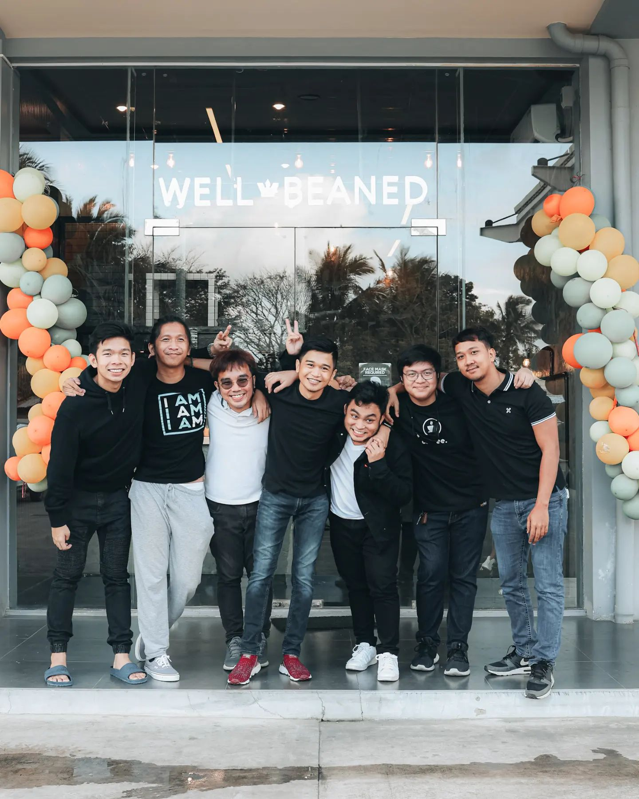

Home
About
Menu
Gallery
Contact
Guidelines
PM
About Us:

Back then, we were in college when my friends and I started to plan to open a business; we've been friends since 2017. There were 7 of us planning on establishing or pushing our business. Afterwards, we came upon saving money when we all got our first jobs. It started at 1k per cut until the years passed; it came up to 2k from that we still don't know what business we were going to establish, until I realized why not a coffee shop? Since my friends and I love drinking coffee.
Our shop was supposed to be inside the La Salle college since there were no other coffee shops there, but we didn't push it since the pandemic hit and there was no face-to-face class. While we were still looking for a place to open our shop, we bought an espresso machine first to practice. From June to November 2021, we fixed or organized our recipes, the taste, and how long we will be pulling the shot of the espresso.
October 2021, we began our search for a business location to rent. We started at Bacoor, then traveled to Silang and Tagaytay. When we spotted the one on the side of the clean-fuel gasoline station, we knew it was the site we'd been looking for, mainly because there were numerous coffee shops around. Our primary focus was bikers, and we just discovered a motocross at clean fuel. We had intended to open in December for Christmas, but we recognized that it would be too hurried, so we've decided to wait until January 2022 to open our coffee shop. After that, the rest is history.